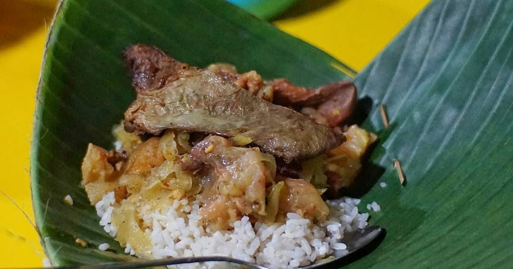

Food
Nasi Kikil Jombang is a popular dish originating from Jombang, East Java, which features beef trotter as its main component. This meal consists of rice or lontong (compressed rice cakes) watered in pieces of beef trotter that have been slow-cooked for a long time until the texture becomes soft and tender. Its signature broth, often made in a lodeh style with coconut milk, has a reddish-yellow color and a savory and have mild spicy flavor that is rich with spices.
Typically, Nasi Kikil is sold as a breakfast or as dinner. The price for a portion of Nasi Kikil Jombang is affordable, generally ranging around Rp. 15,000 - Rp. 25,000. Its economical price and delicious taste make it a favorite culinary choice for many people.